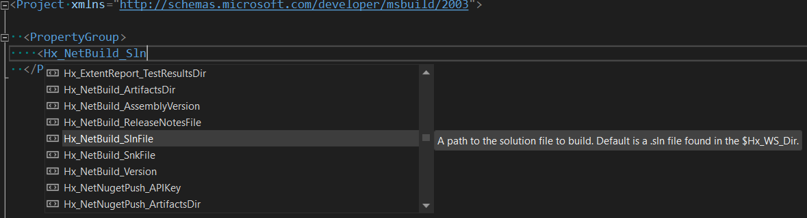
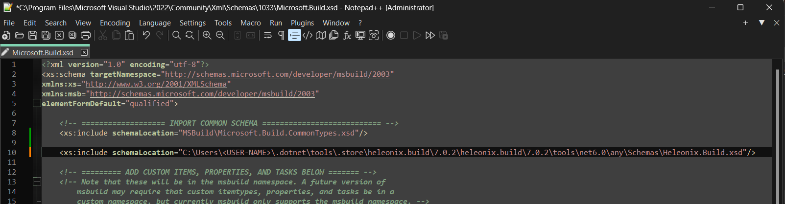
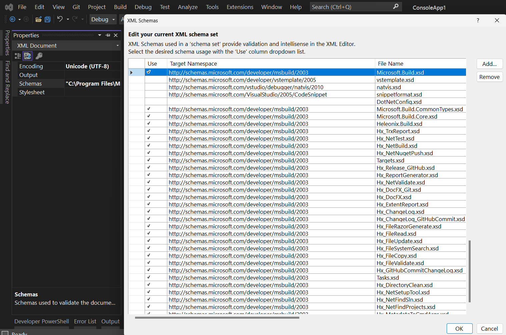

Usage
The framework is used as a .NET CLI tool hxbuild.
It accepts the same arguments as the dotnet msbuild command, because it runs MSBuild under the hood.
Command-line interface
| Argument | Description |
|---|---|
| -h, --help | Displays help with possible CLI arguments |
| --exe | Custom dotnet.exe installation. By default, a globally available dotnet CLI installation is used |
| MSBuild CLI args | CLI arguments of the dotnet msbuild command: https://learn.microsoft.com/en-us/dotnet/core/tools/dotnet-msbuild| |
Examples:
hxbuild -h displays detailed information about the hxbuild tool.
hxbuild -t:Hx_NetBuild runs the <xref:Hx_NetBuild> target.
hxbuild --exe "C:\Program Files\dotnet\dotnet.exe" -t:Hx_NetValidate;Hx_NetBuild -p:Hx_Run_Number=123
runs the <xref:Hx_NetValidate> and then the <xref:Hx_NetBuild> targets with the Hx_Run_Number 123 (see <xref:Heleonix.Build>).
Properties and Items
The build framework provides ability to specify global properties and target-specific properties and items in the following priority order:
Command-line input properties, for example:
hxbuild -t:Hx_NetBuild -p:Hx_Run_Number=123 -p:Hx_NetBuild_SlnFile="./src/MyApp.sln"Workspace-level
*.hxbprojfile. Create a*.hxbprojfile in the format of MSBuild project file in the working directory, where thehxbuildtool is running. Usually it is the directory, where your repository was checked out, or a working directory of the CI/CD agent etc. Use theHx_WS_BuildProjFileCLI property to customize location of the workspace-level*.hxbprojfile starting from the working directory. For example:hxbuild -t:Hx_NetBuild -p:Hx_WS_BuildProjFile="some/where/in/the/working/directory/Build.hxbproj".Run-level
*.hxbprojfile, which is specified as the CLI property-p:Hx_Run_BuildProjFile="D:\company\wide\file.hxbproj"This way can be used i.e. if your DevOps engineers want to specify common (project-wide or company-wide) values for certain properties or items. For example:hxbuild -t:Hx_NetBuild -p:Hx_Run_BuildProjFile="D:\company\wide\file.hxbproj"
Custom .hxbproj file
An example of a Build.hxbproj, which could be used in the p.2 and p.3 in [Properties and Items] might look as below:
<Project xmlns="http://schemas.microsoft.com/developer/msbuild/2003">
<PropertyGroup>
<Hx_NetBuild_SlnFile>./src/MyApp.sln</Hx_NetBuild_SlnFile>
</PropertyGroup>
<ItemGroup>
<Hx_NetBuild_DeleteFiles Include="./extra-file.txt" />
</ItemGroup>
<Target Name="My_Custom_Pre_Target" BeforeTargets="Hx_NetBuild">
<Message Text="Values of properties and items specified at the execution phase override values specified at the evaluation phase" Importance="high" />
<PropertyGroup>
<Hx_NetBuild_Version>./src/MyApp.sln</Hx_NetBuild_SlnFile>
</PropertyGroup>
</Taarget>
<Target Name="My_Custom_Post_Target" AfterTargets="Hx_NetBuild">
<Message Text="Do something after the Hx_NetBuild target" Importance="high" />
</Target>
</Project>
Artifacts
Targets can produce artifacts - files, which are generated in the target-specific artifacts directories.
Every target has the Hx_<TargetName>_ArtifactsDir property, which specifies its artifacts location.
The default location is the $(Hx_Run_ArtifactsDir)/<TargetName>, where <TargetName> is the name of the target without
namespace. See also Hx_Run_ArtifactsDir.
Targets can depend on other targets, but only on their artifacts and not their properties or items,
because targets can be run as standalone hxbuild runs, and in these cases properties and items are defined
only within a standalone run. Artifacts, on the other hand, can be stored and re-used between different hxbuild runs.
Github actions
Example below shows how the build framework could be used in your custom Github actions:
name: "Pull Request Checks"
on:
pull_request:
jobs:
Validate-Build-Test:
runs-on: 'windows-latest'
steps:
- name: Checkout
uses: actions/checkout@v3
- name: HxBuild
run: dotnet tool install Heleonix.Build --version 7.0.3 -g
- name: Validate
run: hxbuild -t:Hx_NetValidate
- name: Build
run: hxbuild -t:Hx_NetBuild
- name: Test
run: hxbuild -t:Hx_NetTest
IntelliSense
The build framework provides XSD schemas to use intellisense while crafting your custom *.hxbproj files.
Example:

The Heleonix.Build.xsd file needs to be specified as the additional XML validation schema for MSBuild projects in your IDE or editor.
For Visual Studio, it should be done as below:
Open the
Microsoft.Build.xsdfile in the Visual Studio installation folder:<Visual Studio Installation Directory>\Xml\Schemas\1033\Microsoft.Build.xsd. On Windows, it is usuallyC:\Program Files\Microsoft Visual Studio\2022\Community\Xml\Schemas\1033\Microsoft.Build.xsd.Add additional schema location pointing to installation path of the
Heleonix.Build.xsd. If the build framework is installed as a global .NET tool, the path might be:C:\Users\<USER-NAME>\.dotnet\tools\.store\heleonix.build\7.0.2\heleonix.build\7.0.2\tools\net6.0\any\Schemas\Heleonix.Build.xsd.
Reload Visual Studio IDE.
All your *.hxbproj files, as well as other MSBuild projects files will have the Schemas list automatically defined,
as shown below:

Notes
- Use slash
/in paths in MSBuild properties and items, not backslash\. MSBuild replaces them on *nix OSs anyway. - Use slash
/in path-related regular expressions in Tasks.